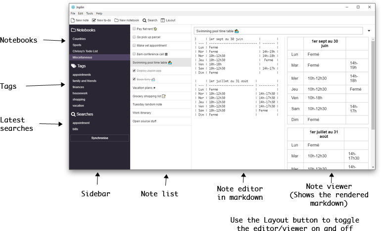
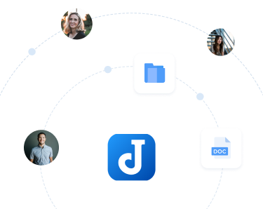

用了 Joplin 一周：终于敢把所有笔记托付给一个软件了
Notion 越来越重、数据不在自己手里，抱着试试看的心态装了 Joplin。一周体验下来，Markdown 编辑器、标签与笔记本的分工、S3 同步方案是我最想分享的三点，也聊聊它让我觉得别扭的地方。
为什么我会装 Joplin
我之前是 Notion 的重度用户——说实话，Notion 的组件化页面、数据库视图、团队协作这些功能确实好用。但最近一年我越来越受不了它了：网页加载越来越慢，有时候打开一个页面要等三五秒；改个标题、插个图片都有延迟，像在用一台内存不够的旧电脑。最让我不踏实的是数据全部存在 Notion 的服务器上——哪天它改收费政策、哪天它不让我导出、哪天它服务器挂了，我的几千篇笔记怎么办？
身边好几个朋友都在用 Joplin，说开源、数据完全自己控制、同步方案随便选。我抱着"大不了用一周就卸载"的心态，先去了官网看了一眼介绍，再从官方下载拿了 Windows 安装包。
初印象：干净得有点朴素
安装包一键装完，双击打开，界面弹出来的那一刻我愣了一下——左中右三栏，左栏是笔记本和标签列表，中栏是笔记列表，右栏是编辑器。没有启动页、没有模板库、没有"欢迎使用"的引导卡片，甚至连个 logo 都很小。就那么干净地摆在那里，像一个已经等你很久的记事本。

说不失望是假的。刚从 Notion 那种"什么都有"的界面跳过来，第一反应是"就这？"。但说实话，这种干净反而让我松了口气——没有首页推荐、没有社区内容、没有各种积分和成就系统，打开它就是来写笔记的，不是来消费内容的。
核心功能体验：三个让我留下来的理由
Markdown 编辑器 + 自动保存，写起来爽
Ctrl+N 新建一篇笔记，第一行自动当标题——这倒是和很多笔记软件一样。但 Joplin 的编辑器让我意外：分屏模式左边写 Markdown 源文本，右边实时渲染成富文本，对我这种熟悉 Markdown 的人来说简直是福音。不想看源文本也能切到纯渲染模式，或者反过来只写源文本不管渲染。
自动保存这个设计，刚开始我还不太习惯——写了半页随手关窗口重开，内容还在。后来才知道改动会记录进笔记历史，默认保留 90 天，误删误改可以恢复。Ctrl+Shift+T 插时间戳这个小功能我特别喜欢，记工作日志或者学习笔记的时候一键就能插入当前时间，不用手动敲。
但也有坑：我试过切到富文本模式写了一段，再切回 Markdown 源文本，格式全乱了——多了一堆转义字符和不规范的标签。之后我就老老实实只用 Markdown 源文本模式，再也不碰富文本了。
标签和笔记本的分工，终于理清了
之前用别的笔记软件，标签体系总是烂尾——一半打"工作"一半打"work"，还有各种同义标签堆在列表里翻都翻不完。Joplin 对标签和笔记本的定位给我拍了板：笔记本回答"这条笔记属于哪个领域"，标签回答"这条笔记有什么属性"。
比如我的笔记本分了"读书"、"工作项目"、"个人日记"三个，固定不动；标签则是"待处理"、"进行中"、"已完成"、"剪藏"这些流动的状态和属性。一条笔记只有一个笔记本，但可以挂好几个标签——比如一篇读书笔记，笔记本是"读书"，标签可以同时打"剪藏"和"待处理"（待写读后感）。筛选的时候点一下标签，所有带这个标签的笔记立刻列出来，跨笔记本也能搜到。
我还去joplin文档翻了一下标签体系的官方建议，定了几条自己的规则：标签命名全中文、不加前缀，建新标签前先搜一遍有没有现成的，定期把使用次数为零的标签删掉。这一周下来标签库还很清爽，没有重蹈之前的覆辙。
S3 同步：数据终于真的在我手里了
这是让我最终决定留下来的关键。Joplin 支持好几种同步目标：官方同步服务（按月收费）、OneDrive、WebDAV、Joplin Server，还有 S3 兼容对象存储。我自己已经搭了一个 MinIO 对象存储，直接选了 S3 方案。

配置过程比我想的简单：填 Access Key、Secret Key、桶名、Endpoint（自建 MinIO 的地址），路径风格选"路径式"，跑一下连通性测试——通了。第一次同步等了大概五分钟，之后桌面端、手机端、家里的笔记本电脑，三个端的数据完全一致，改任何一端其他两端立刻同步过来。
我还开了端到端加密：配置里设了一串加密密码，之后所有笔记内容在传输和存储时都是加密过的。存储桶里的文件我也去看过，全是一长串哈希命名的加密块，就算桶被人拿到也解不开。成本方面，纯文字笔记几乎可以忽略——我塞了 200 多篇笔记，桶占用才不到 20MB，MinIO 自己搭的也没额外费用。
也说说让我觉得别扭的地方
移动端同步不是后台自动的，必须打开 app 才会同步。我之前用 Notion 是后台自动同步，随手记的东西手机上打了字就能在电脑上看到。Joplin 得专门打开手机 app 等它同步完，这点确实不方便。
终端版虽然功能完整，但需要 Node 环境才能装。对程序员来说可能无所谓，但对普通用户来说门槛有点高。我试过在 WSL 里装了一下，跑 joplin sync 命令可以做定时备份，适合服务器场景，但日常用还是桌面端舒服。
界面主题就那几套，深色浅色两种，想换自定义主题得自己折腾 CSS。Notion 虽然重，但界面好看是真的。Joplin 这点比较朴素，干净是干净，但久了也会有点审美疲劳。
适合谁，不适合谁
如果你在意数据主权、不想被任何服务绑定，如果你已经有对象存储或者 WebDAV，如果你习惯用 Markdown 写作——Joplin 完全值得试。它不会把你的数据锁在自己的服务器上，同步方案你自己挑，甚至可以不用云同步只用本地文件夹加 Git 备份。
但如果你想要开箱即用的云同步、不想折腾同步配置，如果你喜欢 Notion 那种组件化的页面、数据库视图，如果你完全不想碰 Markdown——Joplin 可能会让你觉得太简陋。它不是为所有人设计的，它是为那些愿意花半小时配置同步、换回来数据完全自由的人设计的。
这一周我把 Notion 里的笔记一篇篇搬过来了。其实也没那么难，Markdown 导出直接能用，大部分笔记复制粘贴过去就行。现在打开电脑第一件事就是开 Joplin，而不是先等 Notion 加载三秒。说实话，用了一周，我终于敢把所有笔记托付给一个软件了——因为我知道，它们真的属于我。关于 Joplin 的完整资料，我在GitHub、Gitee和GitCode都各存了一份，国内访问哪个顺手用哪个。